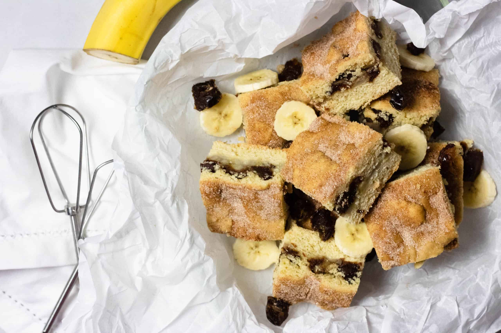

Banana Snickerdoodle Bars

Description
These soft and fluffy bars are like a tasty cross between banana bread and snickerdoodle cookies. They also have the added bonus of requiring no eggs..
Ingredients
- 1 1/4 cups all-purpose flour
- 3/4 teaspoon cream of tartar
- 1/2 teaspoon baking soda
- 1/4 teaspoon salt
- 1/4 teaspoon ground cinnamon
- 1/8 teaspoon ground nutmeg
- 1/8 teaspoon ground nutmeg
- 1/2 cup white sugar
- 1/2 cup white sugar
- 1/2 cup mashed banana
- 2 teaspoons vanilla extract
Instructions
-
Preheat the oven to 350 degrees F (175 degrees C). Line an 8x8-inch square pan with enough parchment paper to have overhang on all sides.
-
Whisk flour, cream of tartar, baking soda, salt, 1/4 teaspoon cinnamon, and nutmeg together in a bowl.
-
Beat butter, 1/2 cup white sugar, and brown sugar in a large bowl with an electric mixer until light and fluffy. Beat in banana and vanilla extract on low speed until thoroughly combined; mix in flour mixture just until dough comes together. Using lightly floured hands, press dough firmly and evenly into the bottom of the prepared pan.
-
Whisk together the 1 tablespoon white sugar and 1/2 teaspoon cinnamon; sprinkle cinnamon sugar evenly over the dough.
-
Bake in the preheated oven just until the dough in the center of the pan feels set when lightly touched with a finger, about 25 minutes.
-
Let bars cool in the pan for 10 minutes before removing to a wire rack to cool completely. Cut into 16 bars.